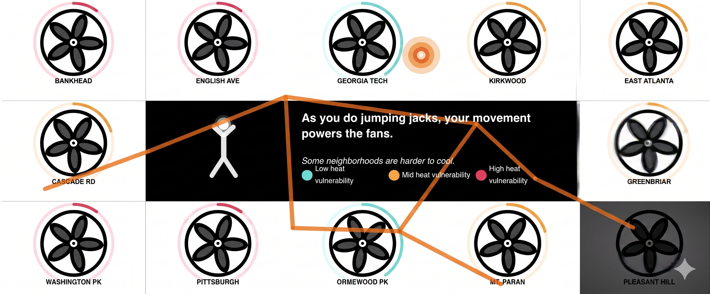
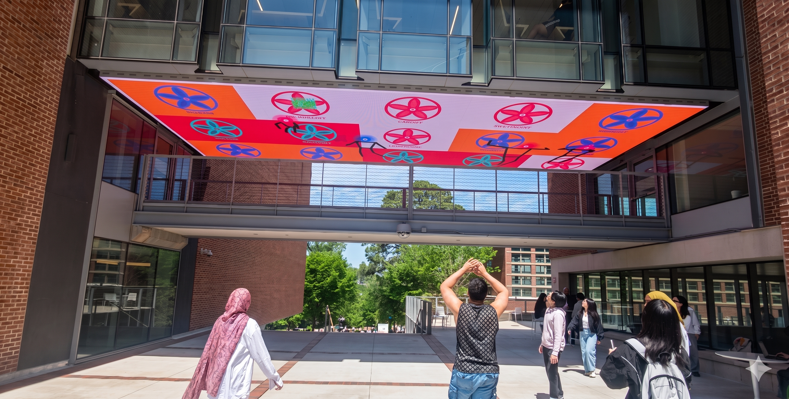

Feel the Heat

Feel the Heat is an embodied interactive installation on Georgia Tech's Media Bridge. It begins with a simple question: what would it feel like to be the person who needs more of everything just to stay cool? The piece does not try to answer that question through charts or statistics. It asks you to answer it through your body.
Twelve fans on the display represent twelve Atlanta neighborhoods, each labeled and colored according to its heat vulnerability level. When a passerby stops and starts doing jumping jacks, their movement powers all twelve fans at once. The fans spin from the same energy you generate. But they do not respond the same way. Some neighborhoods need far more from you before their ring completes. More jumping jacks, more effort, more time standing in the sun. The same body, doing the same thing, producing unequal results for people who never had equal conditions to begin with.

The installation is built around one gesture that needs no explanation. A figure on screen demonstrates jumping jacks. You do them. A camera positioned above the display uses pose tracking to read your movement and convert it into two things: fan rotation speed and progress ring advancement around each neighborhood cell.
The experience changes depending on who participates. When one person stands alone and powers all twelve fans, the disparity is immediately visible. Some rings fill within seconds while others seem to resist every rep. When a group joins together, the most resistant fans finally start moving faster. But even then, the gap does not disappear. Some neighborhoods always required more to reach the same place. That is the point the installation is trying to make you feel, not just understand.
Stand & Detect
Passerby stops in front of the Media Bridge. Camera detects presence via pose tracking and activates the interface.
Do Jumping Jacks
Each rep powers all twelve fans simultaneously. Movement is mapped directly to rotation speed and progress ring advancement.
Unequal Resistance
High-vulnerability neighborhoods require more jumping jacks to complete their ring. The same energy produces different outcomes for different communities.
Unlock & Listen
When a ring completes, that neighborhood expands fullscreen and plays a real phone call from a resident. The data becomes a voice.
Each time a neighborhood ring completes, that community expands to fill the screen and plays a phone call. These calls were developed through research into the real experiences of Atlanta residents and are designed to sound exactly like what they are: ordinary conversations about conditions that should not be ordinary. A facilities manager scheduling an upgrade. A neighbor who is not picking up. A mother doing the math on a bill she cannot afford to pay.
"Confirming a campus-wide HVAC upgrade. The new system should be fully operational before summer."
"I've been trying to reach him all afternoon. He's not picking up. He doesn't have AC in there."
"I can't do both this month. Either groceries or the AC bill. I don't know what I'm going to tell the kids."
Atlanta's heat vulnerability data has been public for years. The maps exist. The numbers have been reported. What they have not been able to do is make you feel the weight of what they describe. This installation starts from the belief that the body understands things the mind can read past. When you are standing in the sun, moving your arms and legs, and watching a progress ring resist every repetition you give it, something lands differently than it does on a page.
By the time the last fan completes, your face is warm and your breathing has changed. You start to think about why these particular neighborhoods required so much more from you, and what it has meant for the people who live inside them all summer long, every summer, without the option of walking away when it gets to be too much.